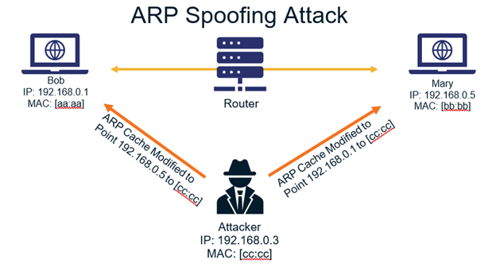

ARP Spoofing
Docker
https://raul-profesor.github.io/DEAW/introduction/
https://kinsta.com/es/base-de-conocimiento/que-es-docker/
https://datascientest.com/es/docker-todo-que-saber
https://www.ibm.com/topics/docker
Tarea 0
Debéis instalar Docker en **Kali** o **Ubuntu**. Podéis ayudaros del material que consideréis, como por ejemplo [este](https://cabrajeta.com/2020/09/como-instalar-docker-en-kali-linux-2020/) o cualquier otro.
ARP
Cuando una máquina necesita comunicarse con otra en una red, necesita conocer en primera instancia su IP para poder enviar el paquete a su destino, pero en capa 2 de OSI, utiliza direcciones MAC. El protocolo ARP entra en juego en este momento, dado que envía los mensajes pertinentes para averiguar la dirección MAC asociada a una IP concreta.

Cuando un dispositivo desea enviar paquetes a otro, lanza un mensaje broadcast ARP preguntando en la red qué disposito posee esa IP concreta y esperando una respuesta únicamente de ese dispositivo identificándose y, además, enviando su MAC.

De esta forma, los dispositivos en la red van construyendo sus tablas ARP, donde cada entrada hace corresponder una IP con su MAC, de tal forma que si tuvieran que volver a enviar mensajes a esas máquinas, ya no necesitan pasar por el proceso de averigüación de direcciones MAC.
ARP Spoofing
Este ataque es de los conocidos como tipo Man in the Middle, llamados así porque consisten en que un atacante o actor malicioso se interpone entre la comnicación de dos víctimas, actuando de intermediario sin que ellas se den cuenta. Esto le permite interceptar toda la comunicación, pudiendo espiarla o incluso modificarla, si así lo desea.
En el caso de un ARP Spoofing, el atacant envía falsos mensajes de respuesta ARP, indicando que su MAC se corresponde con otra IP, la de la víctima y así recibir los mensajes que van destinados a ella.

Realización de la práctica
Debéis clonar el repositorio: https://github.com/raul-profesor/spoofing
Esta práctica está ubicada dentro de la carpeta Lab1-ArpSpoofing.
Vamos a crear la siguiente infraestructura:
Que consiste en:
- Dos contenedores víctimas
- Un atacante
- Un observador TcpDumper cuya única función es escuchar el tráfico de la red
Pasemos a construir las imágenes que más tarde darán lugar a los contenedores del atacante y del TcpDumper que vamos a ejecutar. Para este cometido no tenéis más que ejecutar el script build.sh.
Los contenedores víctimas son simplemente imágenes de busybox sin modificar, directamente del "registry" de Docker.
Atención
Si este build.sh no te funcion y te da algún tipo de error puede pasar que hayas guardado el estado de la máquina virtual en lugar de apagarla. Esto podría llevar a una situación donde la hora no esté sincronizada y de problemas al comunicarse con los repositorios, reinicia tu máquina virtual para que actualice la hora.
Ahora ejecutaremos los 4 contenedores, cada uno en una pestaña distinta del terminal:
docker run -it --rm --name box1 busybox
docker run -it --rm --name box2 busybox
docker run -it --rm --name arpspoofer arpspoofer
docker run -it --rm --net=container:arpspoofer --name tcpdumper tcpdumper
Tarea 1
- Comprueba las IPs y las MAC de box1, box2 y arpspoofer con
ip a - Comprueba la tabla ARP de box1 con
watch ip neigh - Realiza un ping de box2 a box1 y mantenlo
- En el contenedor del
arpspoofercomienza el spoofeo:/usr/sbin/arpspoof -r -i eth0 -t x.x.x.x y.y.y.y(IPs de box1 y 2)
Tras los pasos anteriores deberias empezar a ver el tráfico capturado por el contenedor TcpDumper.
Tarea 2
Además del tcpdump del contenedor TcpDumper pon a capturar tráfico con Wireshark en la interfaz Docker0 de la máquina anfitrión.
Si, como debe ser la situación actual, no tienes entorno gráfico en Rocky, haz la captura de tráfico con Tcpdump.
Tarea 3
Describe detalladamente qué observas que está ocurriendo en la captura del contenedor TcpDumper
Tarea 4
¿Cómo podemos tener una pista de lo que está ocurriendo mirando sólamente el ping que hemos lanzado al principio?
Tarea 5
En la captura de TCPDump, indica y explica detalladamente:
-
Mensajes ARP donde se ve claramente qué está ocurriendo y cuál es el ataque, indíca explícitamente los mensajes.
-
Mensajes ICMP donde se ve la secuencia de los acontecimientos.
Tarea 6
Transfiérete la captura de tráfico de la Tarea 2 a una máquina donde cuentes con Wireshark. Ya vimos formas de realizar esta transferencia en la práctica de Veracrypt.
Abre esta captura con Wireshark, filtra por el protocolo ICMP y repite las explicaciones de la Tarea 5.
Tarea 7
Realiza un diagrama en [https://www.drawio.com/](https://www.drawio.com/) donde expliques claramente de forma gráfica el proceso que has llevado a acabo.